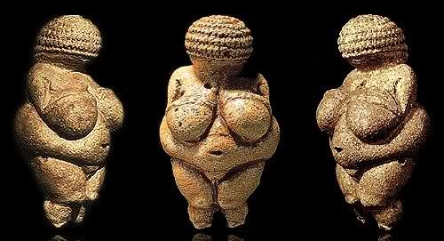
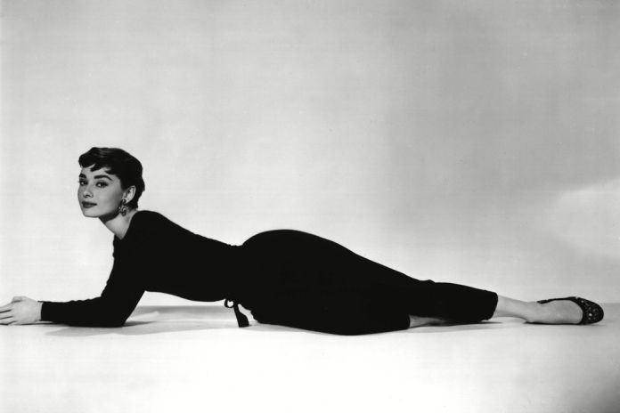
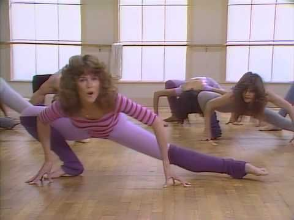
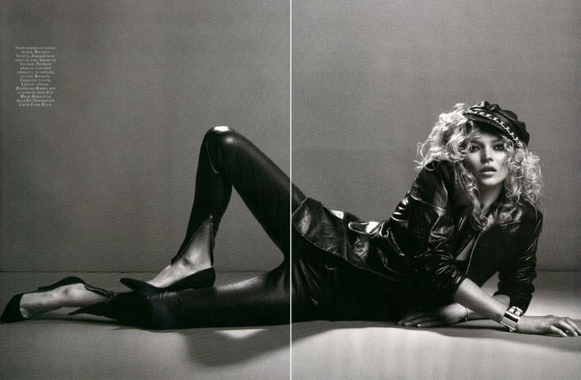
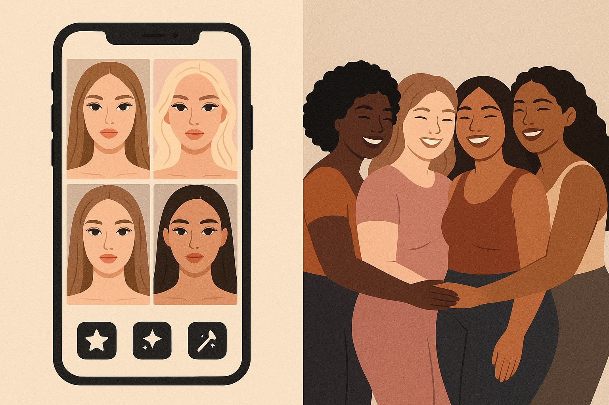

Movimentos Sociais
Empoderamento da Beleza Negra
A luta por aceitação e justiça social valoriza o corpo negro, o cabelo crespo e a diversidade, com a tecnologia como aliada.

Corpos mais volumosos eram símbolos de fertilidade, saúde e prosperidade, refletindo a cultura da época.
A alta-costura europeia e o cinema influenciam a valorização de corpos mais finos e esbeltos.
O corpo magro e escultural se torna o ideal, impulsionado pela popularização da ginástica e o culto à boa forma.
A modelo Kate Moss se torna um ícone, representando um ideal de magreza e androginia.
As plataformas digitais disseminam padrões de beleza idealizados, mas também criam movimentos de aceitação e representatividade.
A luta por aceitação e justiça social valoriza o corpo negro, o cabelo crespo e a diversidade, com a tecnologia como aliada.